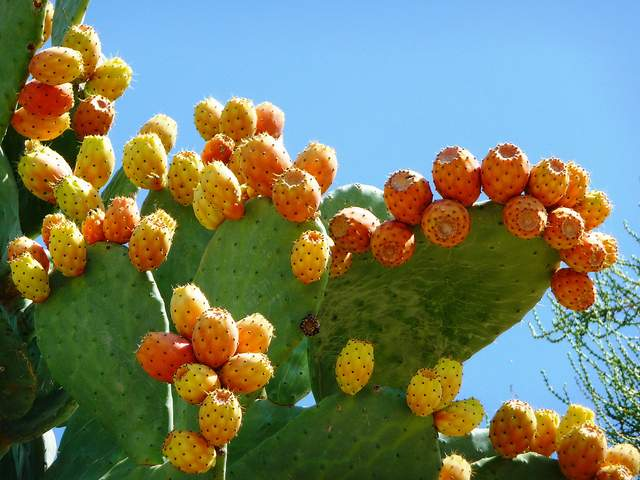

Ayuntamiento de Senés
JARDIN BOTANICO DE ESPECIES AUTOCTONAS DE SENES

Opuntia ficus-indica

La chumbera (Opuntia ficus-indica), conocida por sus frutos como chumbas, es una planta suculenta perenne característica de climas áridos y semiáridos. Se distingue por sus tallos planos y carnosos, llamados cladodios, que realizan la función fotosintética.
Estos segmentos están cubiertos de espinas y pequeñas gloquidias. Durante la floración, produce grandes flores de color amarillo o anaranjado, que dan lugar a los frutos carnosos conocidos como chumbas, de sabor dulce.
La chumbera es originaria de América, pero se encuentra ampliamente naturalizada en la región mediterránea. Crece en terrenos secos, soleados y pedregosos, adaptándose perfectamente a condiciones de escasez de agua.
En el entorno de Senés, es frecuente en laderas y terrenos abandonados, formando parte del paisaje característico.
Los chumbos son frutos ricos en vitaminas, antioxidantes y fibra, con propiedades digestivas y refrescantes. También se han utilizado tradicionalmente con fines medicinales.
Además, la planta tiene usos en alimentación animal y en la estabilización de suelos.
La chumbera simboliza la resistencia y la adaptación, siendo capaz de prosperar en condiciones extremas de sequía.
También representa la abundancia, gracias a la producción de sus frutos.
En Senés, las chumbos han sido recolectadas para su consumo tanto humano como animal, siendo un fruto muy apreciado en verano. Sin embrago había que tener cuidado, se decía que atrancaban el recto si se comía demasiados. Se hacía vinagre fermentando chumbos para condimentar ensaladas. Las pencas se utilizan para alimentar las ganaderías, los chumbos emvueltos en salvado se utilizaban para el engorde de cerdos.
Se utilizaba para regular la glucosa, reducir el colesterol, es antioxidante del hígado y para regenerar la mucosa gástrica.
Las chumbas maduran principalmente en verano, coincidiendo con las altas temperaturas.
Las chumbas deben manipularse con cuidado debido a sus pequeñas espinas. A pesar de ello, son un fruto muy apreciado en zonas mediterráneas.
La chumbera es una de las plantas mejor adaptadas a la sequía en el entorno mediterráneo.